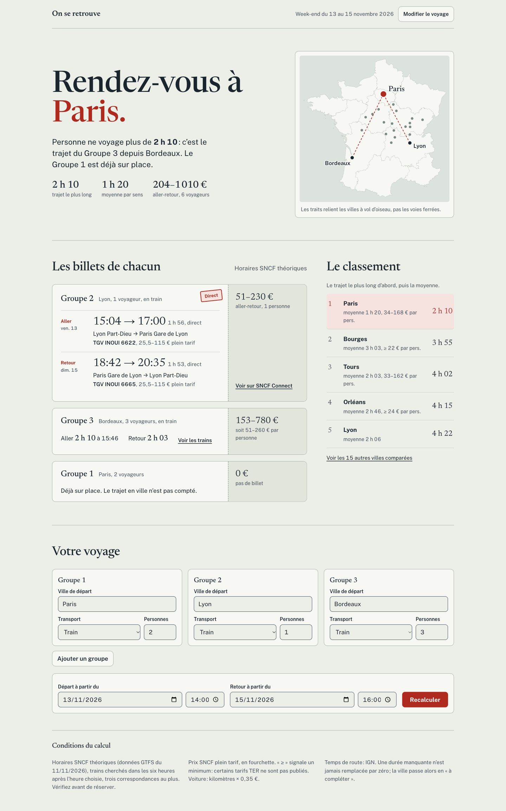
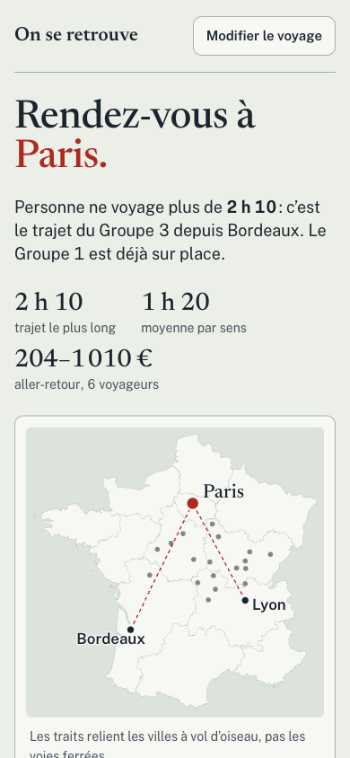
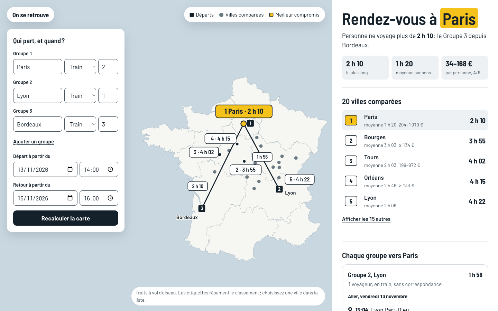
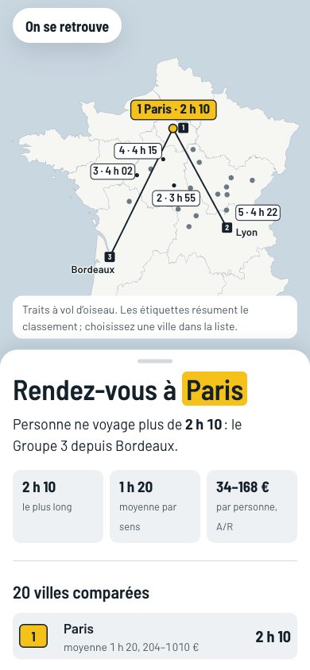
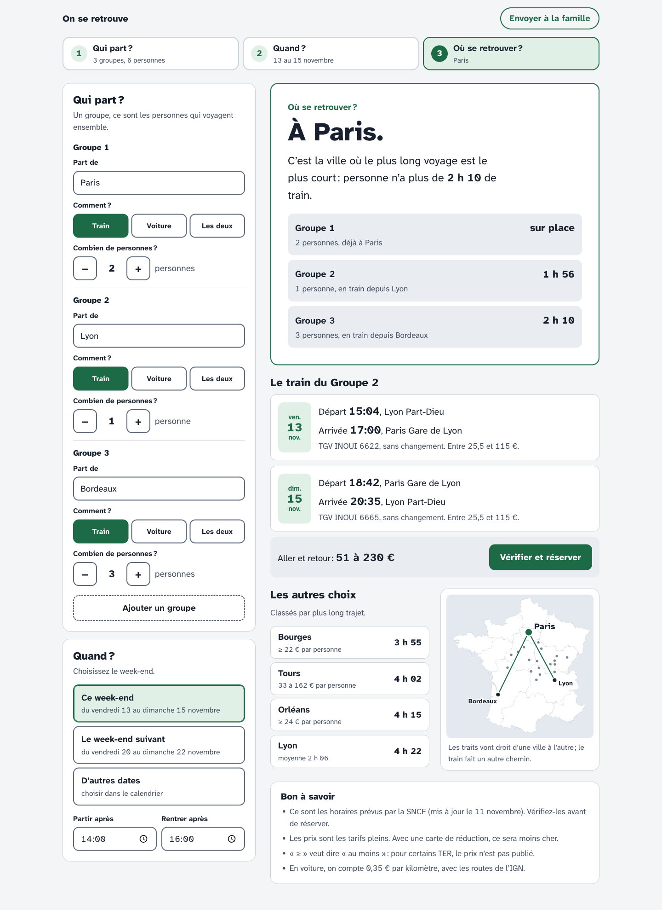
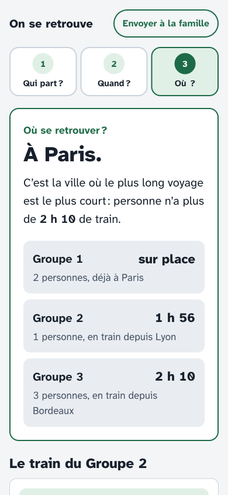

On se retrouve : trois pistes de design
Trois directions franchement différentes pour l’écran de résultat, chacune montrée sur ordinateur et sur téléphone, en clair et en sombre. Les chiffres viennent d’un vrai calcul de l’application (week-end du 13 au 15 novembre 2026, groupes partant de Paris, Lyon et Bordeaux). La comparaison et la recommandation sont dans README.md.
A. Carnet de route
La réponse d’abord, en grand titre : « Rendez-vous à Paris. » Chaque groupe reçoit ensuite un billet, avec l’aller, le retour, le numéro de train et le prix sur le talon détachable. Papier vert-gris, encre de composteur, un serif de titrage. On garde la page unique de l’application actuelle ; on change la hiérarchie et le ton, pas la structure.




B. Carte d’abord
La carte occupe l’écran. Chaque ville comparée porte une étiquette avec son rang et son trajet le plus long, la gagnante en jaune de carte routière. Le résultat vit dans un panneau latéral sur ordinateur et dans une feuille qui remonte sur téléphone ; le formulaire flotte sur la mer. C’est la piste la plus spectaculaire, et la plus chère à bien faire.




C. Pas à pas
Trois questions : Qui part ? Quand ? Où se retrouver ? De gros boutons (52 px), une police conçue pour les malvoyants, des réponses en phrases (« Départ 15:04, Lyon Part-Dieu »). Le transport se choisit d’un toucher, le nombre de personnes avec − et +, le week-end parmi trois cartes. Pensé pour les grands-parents sur téléphone.




Maquettes statiques : aucun bouton ne calcule. Les polices viennent de Google Fonts dans ces maquettes ; en production elles seraient auto-hébergées.